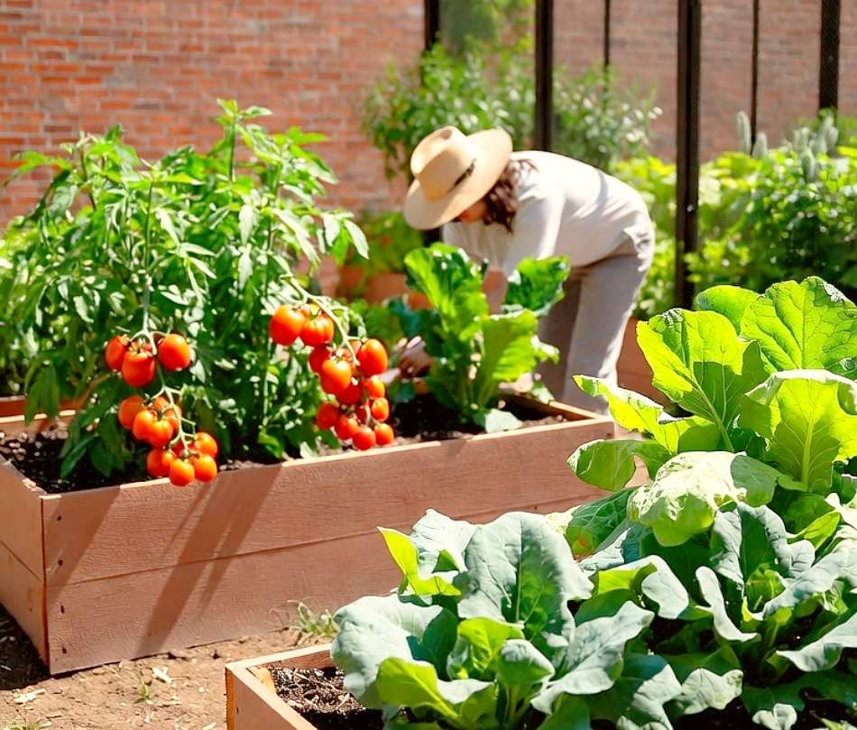

Evidencias Multimedia del Proyecto
Fotografías del Huerto



Audioguía: Cómo regar el huerto urbano
Taller en Video: 10 Consejos más importantes para comenzar desde cero
Esquema Vectorial: Zonas de una Planta
Este diagrama SVG representa la distribución básica de la maceta y el tallo foliar mediante figuras vectoriales compuestas.